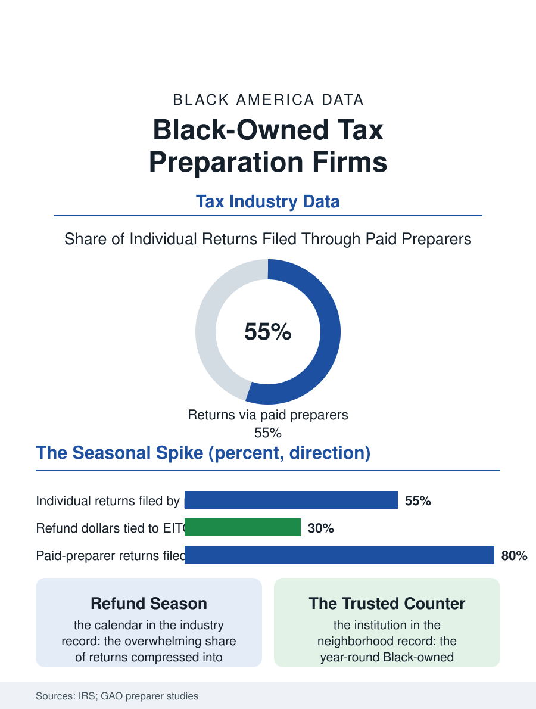

Black Business
Refund Season: Black-Owned Tax Preparation Firms
Tax season makes the storefront preparer a central financial institution in Black neighborhoods, and Black-owned practices are built on the trust transacted at that counter. The tax file.

Every spring, the storefront tax office becomes one of the most trusted financial institutions in Black America. National chains, independent preparers, and a long tradition of Black-owned tax practices process the returns through which working families receive their largest single payment of the year, the refund, swollen by the earned income and child tax credits. Black-owned firms hold a meaningful share of the storefront preparation market in the communities they serve, inside an industry the IRS oversees by registration rather than license. This article reads the tax file.
The Refund Season Economy
The industry's calendar is a spike: the overwhelming share of individual returns are filed between late January and mid-April, and the preparation business is built to harvest those twelve weeks, storefront leases signed for the season, preparers hired and trained in the fall, advertising concentrated in the refund months. The economics for Black neighborhoods carry a specific weight, because the earned income tax credit delivers its largest benefits to the low-wage workers concentrated there, making the refund, and therefore the preparer who secures it, a central actor in the household budget year. The IRS's own studies of paid preparers show the market's structure: a small number of national chains, a large middle of independent offices, and a long tail of seasonal operators. Black-owned practices cluster in the independent middle, multi-generational in the strongest cases, where the founder's reputation and church-and-neighborhood networks substitute for the chains' advertising budgets. Year-round survival is the segment's real test, and the durable firms convert the seasonal relationship into bookkeeping, payroll, business returns, and advisory work for the small-business clientele the rest of this atlas describes, using tax season as the top of a twelve-month funnel.
Accuracy, Fees, and the Consumer File
The consumer record keeps the industry honest in the file's telling. Government accountability studies of paid preparation have repeatedly found error rates that trouble regulators, with refund-anticipation products, the loans and transfers layered onto refunds, attracting particular scrutiny for fees that fall hardest on credit-claiming, low-income filers, disproportionately Black. The IRS's preparer registration system and due-diligence rules for credit claims are the federal answer on paper; enforcement reach is the perennial question. For Black-owned firms the consumer file cuts in their favor more often than not in the local record: the neighborhood practice depends on repeat business across decades and family referrals, an incentive structure that punishes the extractive model, and the community-trusted preparer is a genuine institution, the office that keeps the copies when the apartment floods and answers the IRS notice letter in July when the chains' storefronts are dark. The professionalization current runs the same direction: enrolled agents and CPAs among Black preparers have built a visible tier of practices marketing year-round planning rather than seasonal processing, and the franchise systems of the Black-founded tax chains, several of which rank among the largest preparer networks in the country, have scaled that model nationally, an ownership fact the industry's trade press records with respect.
The Twelve-Month Question
The file's forward chapter is the business model question every seasonal industry faces: what is the firm the other forty weeks? The answers in the record sort into three designs. The payroll-and-bookkeeping firm sells monthly services to the small businesses on its tax rolls, converting the annual return into a subscription. The advisory firm moves upmarket, entity formation choices, retirement plans, and IRS representation, work priced on expertise and available only to credentialed preparers, which is pushing a generation of Black preparers toward the enrolled agent credential as the segment's growth license. The multi-service storefront adds insurance, notary, and financial coaching at the same counter, becoming the neighborhood's front office for paperwork of every kind. Policy threads through all three: proposals to expand free direct filing by the IRS itself would compress the industry's low end, shifting the Black preparer economy toward the credentialed, year-round designs and away from the seasonal processing where its most vulnerable customers and thinnest operators meet. The tax file closes at the counter in February, where the preparer explains the refund, the credits, and the fee to a family making its largest financial decision of the year in a twenty-minute conversation. The trust transacted in that conversation, compounded over generations of returns, is the Black tax practice's real balance sheet, and it does not appear in any industry's revenue table.
More in Black Business
Black-Owned Businesses: Counts, Receipts, and the Representation Gap
About 161,000 Black-owned employer firms and three million solo ventures: how the Census Bureau counts Black business ownership, where firms concentrate, and the gap between population share and business share.
Black Median Net Worth: The Wealth Gap in Federal Reserve Data
The Federal Reserve puts Black median family net worth at $44,900, against $285,000 for White families — about 16 cents on the dollar. The widest gap in economic data.
Black Buying Power: The $1.8 Trillion Consumer Economy
Black buying power is estimated at about $1.8 trillion — larger than the economy of most nations. What the figure measures, who produces it, and what it buys.
Source: Internal Revenue Service return preparer data; Government Accountability Office studies of paid tax preparation; U.S. Census Bureau, Annual Business Survey (NAICS 54121).